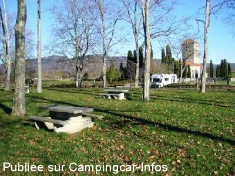

APN = Parking toléré jour/nuit de :
VALCABRÈRE
(N° 146)
Accès/adresse :
31510 VALCABRÈRE
Latitude : (Nord) 43.02812° Décimaux ou 43° 1′ 41′′
Longitude : (Est) 0.5837° Décimaux ou 0° 35′ 1′′
Tarif : Gratuit
Services :

Tables de pique-nique
Tous commerces
Autres informations :
Parking ombragé
Proche de la basilique Saint-Just

Le 07/01/2015 par finale
de
cc76
le 25/08/2008 :
Il y a environ 3 places, maintenant c'est gravillonné mais nous avons préféré le grand parking au pied de st bertrand de comminges avec des toilettes propres
Il y a environ 3 places, maintenant c'est gravillonné mais nous avons préféré le grand parking au pied de st bertrand de comminges avec des toilettes propres